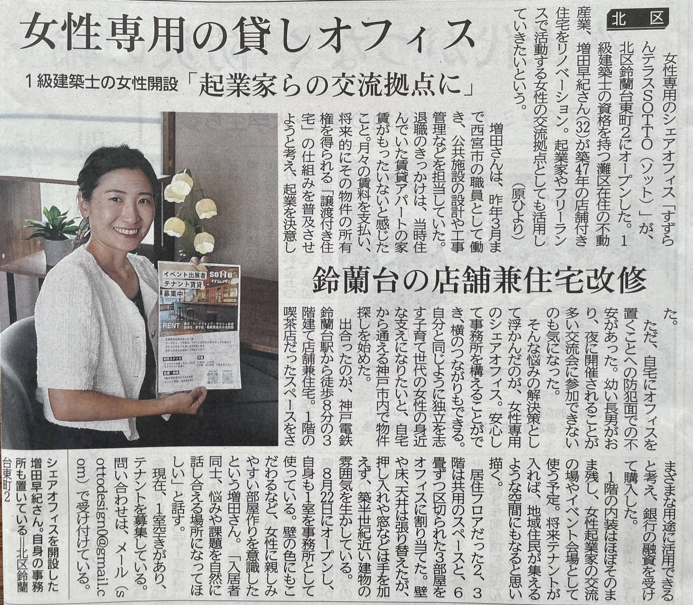

1級建築士の女性開設「起業家らの交流拠点に」
鈴蘭台の店舗兼住宅改修

2026年9月11日の神戸新聞 朝刊「わがまち神戸」にて、 神戸市北区・鈴蘭台に開設した「すずらんテラス SOTTO」をご紹介いただきました。
築47年の店舗兼住宅を改修し、女性の起業家やフリーランスが集う交流拠点として活用していく取り組みについて、 開設への思いとともに取り上げていただいています。記事の全文は上の紙面画像でご覧いただけます。
あたたかく取材・ご紹介くださった神戸新聞社の原さまに、心より御礼申し上げます。